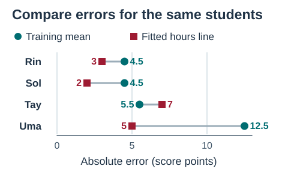

Can the class improve on a simple exam-score forecast for students whose scores it has never used? Build a reproducible comparison, find a case where the improvement breaks down, and defend the conclusion in a short report.
Start with Ava, Ben and Cam from Module 01. Add nine fictional records. Reuse tensors from Stage I, regression and model comparison from Stage II, and reliability checks from Module 15. Each row is one student and each score is out of 100.
Check your understanding
Why can getting closer to Ava's score of 60 after a gradient update leave the class unsure about future students?
Reveal answer
Ava's score helped choose that update. Other students supply independent evidence about whether the changed rule generalizes.
CS 483/583 · Module 16 · Slide 2 of 13
Write the question as a prediction task
Put yourself at the instant just before a fictional exam. The model receives a student's study hours and completed practice sets recorded by then. Its target is the exam score, measured later. Success means small errors for students held out from fitting.
Worked example
For Ava the available pair is (2, 3), and the eventual score is 60. A one-row forecast under the original course rule is 55 points. A post-exam field such as number of correct answers would reveal the outcome.
Formal notation
xᵢ = (hᵢ, sᵢ) is student i's pair of hours and sets; yᵢ is that student's exam score. A prediction ŷᵢ has the same unit as yᵢ, score points.
Could you include a field called final_grade when predicting before the exam?
Reveal answer
Only information actually available at prediction time belongs in the input. A final grade computed using the exam score leaks the outcome.
CS 483/583 · Module 16 · Slide 3 of 13
Freeze the data, split and evaluation rule
Training rows fit parameters. Validation rows help choose a candidate. Test rows are held aside until that choice is fixed. Keep one student in only one split and write down the exact names so someone else can reproduce the same comparison.
Worked example
Use the six named training records, two validation records and four test records below. Choose among three candidates by lowest validation mean absolute error, resolving a tie in favor of the training mean, then the original rule, then the fitted line. Evaluate the choice once on the test set alongside the predeclared baseline.
Formal notation
MAE = (1/n) Σᵢ |ŷᵢ − yᵢ|. Sum absolute errors, then divide by the number n of students in the evaluated split.
Show the Python example
# Each row holds a fictional student's name, hours, completed sets, and score.
train = [("Ava",2,3,60),("Ben",4,1,70),("Cam",5,2,75),
("Dee",0,1,52),("Eli",1,0,52),("Fin",3,2,66)]
valid = [("Ira",2,0,61),("Jo",4,3,69)]
test = [("Rin",1,1,58),("Sol",3,1,67),("Tay",5,3,68),("Uma",4,0,75)]
names = [name for rows in [train,valid,test] for name,h,s,y in rows]
assert len(names) == len(set(names))
for label, rows in [("train", train), ("validation", valid), ("test", test)]:
print(label, [row[0] for row in rows])
After seeing the four test scores, may you try several new models and present the best on those four as an independent result?
Reveal answer
Those scores would then help select the model. Treat the change as exploratory and reserve a fresh independent test set for a new evaluation.
CS 483/583 · Module 16 · Slide 4 of 13
Set two reference points
A baseline answers how much performance a more complex method must improve upon. Use a constant equal to the mean training score. Also evaluate the original hand-picked two-feature rule so the class can track what it learned since Module 01.
Worked example
The six training scores sum to 375. Their mean is 62.5, which becomes one shared prediction for every student. On validation, Ira scored 61 and Jo 69. The constant's mean absolute error is (1.5 + 6.5)/2 = 4.
Formal notation
c = (Σtrain yᵢ)/ntrain. The constant c uses only training labels. The second candidate is ŷ = 20 + 10h + 5s.
Show the Python example
# Each row holds a fictional student's name, hours, completed sets, and score.
train = [("Ava",2,3,60),("Ben",4,1,70),("Cam",5,2,75),
("Dee",0,1,52),("Eli",1,0,52),("Fin",3,2,66)]
valid = [("Ira",2,0,61),("Jo",4,3,69)]
test = [("Rin",1,1,58),("Sol",3,1,67),("Tay",5,3,68),("Uma",4,0,75)]
c = sum(row[3] for row in train)/len(train)
for name,h,s,y in valid:
print(name, y, c, 20+10*h+5*s)
Reveal the output
Ira 61 62.5 40
Jo 69 62.5 75
Check your understanding
Why should two students with different study histories receive the same baseline forecast?
Reveal answer
The baseline deliberately uses only the training mean. Beating it measures whether the features and fitted rule add predictive value on this split.
CS 483/583 · Module 16 · Slide 5 of 13
Fit a line using only the training rows
The third candidate uses just study hours. Fit its slope and intercept by minimizing the sum of squared training errors as in Module 05. Evaluate all three candidates using the predeclared MAE. Training and evaluation can use different loss functions when their roles are explicit.
Worked example
The mean training hours are 2.5 and mean score is 62.5. The sum of centered hour–score products is 87.5; the sum of squared centered hours is 17.5. The fitted slope is 5 and the intercept is 50.
Formal notation
w = Σ(hᵢ − h̄)(yᵢ − ȳ)/Σ(hᵢ − h̄)². Set b = ȳ − wh̄. The fitted forecast is b + wh. A bar marks an average over training rows.
Show the Python example
# Each row holds a fictional student's name, hours, completed sets, and score.
train = [("Ava",2,3,60),("Ben",4,1,70),("Cam",5,2,75),
("Dee",0,1,52),("Eli",1,0,52),("Fin",3,2,66)]
valid = [("Ira",2,0,61),("Jo",4,3,69)]
test = [("Rin",1,1,58),("Sol",3,1,67),("Tay",5,3,68),("Uma",4,0,75)]
import torch
hours = torch.tensor([h for name,h,sets,y in train], dtype=torch.float64)
scores = torch.tensor([y for name,h,sets,y in train], dtype=torch.float64)
centered = hours - hours.mean()
slope = (centered * (scores-scores.mean())).sum() / centered.square().sum()
bias = scores.mean() - slope * hours.mean()
baseline = scores.mean().item()
def predict(h):
return bias.item() + slope.item()*h
print("slope, intercept", slope.item(), bias.item())
print("Ava's fitted forecast", predict(2))
What would happen to the slope calculation if every training student reported the same number of hours?
Reveal answer
Every centered hour value would be zero. The denominator would vanish, so the data could not identify a change in score per extra hour.
CS 483/583 · Module 16 · Slide 6 of 13
Select on validation and lock the rule
Evaluate all candidates on the same two validation students, keeping them out of the fit. A difference in validation error informs this example's choice. The small split also limits how stable the ranking may be.
Worked example
The fitted line predicts 60 for Ira and 70 for Jo, giving errors 1 and 1. The hand-picked rule predicts 40 and 75, giving errors 21 and 6. The constant's errors are 1.5 and 6.5. The fitted line wins the predeclared comparison.
Formal notation
m* = argminₘ MAEvalid(m) means choose the candidate m with the smallest validation error. Freeze that choice before inspecting test results.
Show the Python example
# Each row holds a fictional student's name, hours, completed sets, and score.
train = [("Ava",2,3,60),("Ben",4,1,70),("Cam",5,2,75),
("Dee",0,1,52),("Eli",1,0,52),("Fin",3,2,66)]
valid = [("Ira",2,0,61),("Jo",4,3,69)]
test = [("Rin",1,1,58),("Sol",3,1,67),("Tay",5,3,68),("Uma",4,0,75)]
import torch
hours = torch.tensor([h for name,h,sets,y in train], dtype=torch.float64)
scores = torch.tensor([y for name,h,sets,y in train], dtype=torch.float64)
centered = hours - hours.mean()
slope = (centered * (scores-scores.mean())).sum() / centered.square().sum()
bias = scores.mean() - slope * hours.mean()
baseline = scores.mean().item()
def predict(h):
return bias.item() + slope.item()*h
def mae(rows, prediction):
errors = [abs(prediction(h,sets)-y) for name,h,sets,y in rows]
return sum(errors) / len(errors)
models = {"training mean": lambda h,s: baseline,
"Module 01 rule": lambda h,s: 20+10*h+5*s,
"fitted hours": lambda h,s: predict(h)}
validation_errors = {name: mae(valid, f) for name,f in models.items()}
print(validation_errors)
print("selected", min(validation_errors, key=validation_errors.get))
If the constant had beaten both rules on validation, what should you have selected?
Reveal answer
Select the constant under the written rule. A richer model must earn its place by predicting held-out outcomes well.
CS 483/583 · Module 16 · Slide 7 of 13
Measure the result on the four held-out students
Apply the frozen model and training-mean baseline to all four test students. Show predictions beside outcomes so another student can recompute the reported average. Keep units on the result.
Worked example
For Rin, Sol, Tay and Uma, the fitted line predicts 55, 65, 75 and 70. Its absolute errors are 3, 2, 7 and 5. The baseline's absolute errors are 4.5, 4.5, 5.5 and 12.5. On these cases the fitted line reduces MAE by 2.5 points.
Formal notation
MAEtest(line) = 17/4 = 4.25 points; MAEtest(constant) = 27/4 = 6.75 points. Each mean uses the same four records.

Show the Python example
# Each row holds a fictional student's name, hours, completed sets, and score.
train = [("Ava",2,3,60),("Ben",4,1,70),("Cam",5,2,75),
("Dee",0,1,52),("Eli",1,0,52),("Fin",3,2,66)]
valid = [("Ira",2,0,61),("Jo",4,3,69)]
test = [("Rin",1,1,58),("Sol",3,1,67),("Tay",5,3,68),("Uma",4,0,75)]
import torch
hours = torch.tensor([h for name,h,sets,y in train], dtype=torch.float64)
scores = torch.tensor([y for name,h,sets,y in train], dtype=torch.float64)
centered = hours - hours.mean()
slope = (centered * (scores-scores.mean())).sum() / centered.square().sum()
bias = scores.mean() - slope * hours.mean()
baseline = scores.mean().item()
def predict(h):
return bias.item() + slope.item()*h
def mae(rows, prediction):
errors = [abs(prediction(h,sets)-y) for name,h,sets,y in rows]
return sum(errors) / len(errors)
models = {"training mean": lambda h,s: baseline,
"Module 01 rule": lambda h,s: 20+10*h+5*s,
"fitted hours": lambda h,s: predict(h)}
for name,h,s,y in test:
print(name, "observed", y, "line", predict(h), "baseline", baseline)
print("test MAE", mae(test, models["fitted hours"]), mae(test, models["training mean"]))
Reveal the output
Rin observed 58 line 55.0 baseline 62.5
Sol observed 67 line 65.0 baseline 62.5
Tay observed 68 line 75.0 baseline 62.5
Uma observed 75 line 70.0 baseline 62.5
test MAE 4.25 6.75
Check your understanding
Did the fitted line beat the baseline for every test student?
Reveal answer
Tay's line error is 7 versus the baseline's 5.5. An improvement in the average can coexist with an individual regression.
CS 483/583 · Module 16 · Slide 8 of 13
Interpret a probability only under its assumptions
A point prediction does not describe the spread around it. For an illustration, assume scores around the line have a Gaussian shape with a fixed standard deviation of five points. This specified spread is an additional modeling assumption. Evaluate its calibration with additional data before interpreting it as a measured uncertainty.
Worked example
For four hours the mean is 70. A symmetric Gaussian centered at 70 puts half its mass at or above 70. For three hours the mean is 65; reaching 70 is one assumed standard deviation above it, an upper tail near 0.159.
Formal notation
Y | h ∼ Normal(50 + 5h, 5²) describes a conditional score distribution. The second argument 5² is the variance. P(Y ≥ 70 | h) is the fraction of that distribution at or above 70.
Show the Python example
import torch
for h in [3., 4.]:
mu = torch.tensor(50 + 5*h)
distribution = torch.distributions.Normal(mu, torch.tensor(5.))
upper_tail = 1 - distribution.cdf(torch.tensor(70.))
print(h, round(upper_tail.item(), 3))
Reveal the output
3.0 0.159
4.0 0.5
Check your understanding
Does 0.5 at four hours mean that half of future four-hour students have been shown to reach 70?
Reveal answer
That fraction follows from the assumed Gaussian curve. Check observed frequencies in a larger held-out sample and evaluate the assumed spread.
CS 483/583 · Module 16 · Slide 9 of 13
Report a failure and test the recording assumption
Separate prediction errors by a rule stated in the report and show the counts. Also simulate a plausible input mistake while holding the original scores fixed. These exploratory checks identify what to investigate on fresh data.
Worked example
For students with at least four hours, the line's errors are 7 and 5, averaging 6. For the two students below four hours they average 2.5. If a reporting bug adds one hour to each test record, each line prediction rises by five points. Recalculate all four errors rather than assuming each gets worse.
Formal notation
Residual eᵢ = ŷᵢ − yᵢ. Positive means overprediction. The paired stress test uses h′ᵢ = hᵢ + 1 and keeps yᵢ fixed.
Show the Python example
# Each row holds a fictional student's name, hours, completed sets, and score.
train = [("Ava",2,3,60),("Ben",4,1,70),("Cam",5,2,75),
("Dee",0,1,52),("Eli",1,0,52),("Fin",3,2,66)]
valid = [("Ira",2,0,61),("Jo",4,3,69)]
test = [("Rin",1,1,58),("Sol",3,1,67),("Tay",5,3,68),("Uma",4,0,75)]
import torch
hours = torch.tensor([h for name,h,sets,y in train], dtype=torch.float64)
scores = torch.tensor([y for name,h,sets,y in train], dtype=torch.float64)
centered = hours - hours.mean()
slope = (centered * (scores-scores.mean())).sum() / centered.square().sum()
bias = scores.mean() - slope * hours.mean()
baseline = scores.mean().item()
def predict(h):
return bias.item() + slope.item()*h
for minimum, maximum in [(0, 3), (4, 5)]:
errors = [abs(predict(h)-y) for name,h,s,y in test if minimum <= h <= maximum]
print(minimum, maximum, len(errors), sum(errors)/len(errors))
shifted = [abs(predict(h+1)-y) for name,h,s,y in test]
print("shifted errors", shifted, "MAE", sum(shifted)/len(shifted))
Can these two groups establish that studying longer causes larger prediction errors?
Reveal answer
Each group contains only two students. Study behavior was observed, and the groups may differ in other ways. Report the observed errors and test the pattern on fresh records.
CS 483/583 · Module 16 · Slide 10 of 13
Write a claim someone else can check
Write one sentence that names the comparison, its metric and its population. Put the prediction table and split beside that claim so a reader can check it. Describe a case where the selected model lost and a follow-up test that could change your conclusion.
Worked example
On the same four fictional students, the training-fitted hours line reduced test MAE from 6.75 to 4.25 points. It missed Tay by seven points. A fresh cohort and independently verified study logs could test whether the improvement persists. Someone repeating the study should be able to recover both the mean improvement and Tay's result.
Formal notation
Improvement = MAEbaseline − MAEselected = 2.50 score points on this split. A positive difference favors the selected model under this metric.
fitted hours baseline MAE 6.75 model MAE 4.25
observed improvement 2.5
Check your understanding
A reviewer gets exactly your numbers but concludes that one more hour of study will raise anyone's score by five points. What should you revise?
Reveal answer
Make the interpretation explicit: five is the fitted slope on fictional training records. A causal effect would require evidence about what would happen if study hours actually changed.
CS 483/583 · Module 16 · Slide 11 of 13
Carry out your capstone investigation
Submit a notebook that runs from the first cell and a one-page findings report. For an independent study, use the new fictional cohort generated below. Forecast a student's exam score from pre-exam records. Before fitting, write down your candidate rules, validation metric and tie-break. Use the training mean as a baseline. Fit an hours-only line, then decide whether a model using both hours and sets deserves a place in your comparison. Use only training rows to estimate every coefficient.
Worked example
The starter creates 60 students, shuffles them once, and reserves 36 for training, 12 for validation and 12 for testing. Record the seed and split IDs. Choose a rule on validation, freeze it, and report each test student's observed score, baseline prediction, selected prediction and absolute errors. Describe one failure and one paired stress test. In the report, give the result in score points, name one limitation and propose new evidence to test your explanation. The synthetic score formula documents how the data were made. Your fitted models must learn their coefficients from the training rows.
Formal notation
Δ = MAE(test baseline) − MAE(test selected). A positive Δ favors the selected model. Both errors use the same twelve untouched students. This project and the Module 16 in-class assessment are separate deliverables. The syllabus gives their provisional course weights as 20% and 5%, respectively.
Show the Python example
from random import Random
from statistics import mean
rng = Random(483)
rows = []
for student_id in range(1, 61):
hours = rng.randrange(6)
sets = rng.randrange(5)
score = 46 + 4*hours + 3*sets + rng.randint(-7, 7)
rows.append((student_id, hours, sets, score))
rng.shuffle(rows)
train, valid, test = rows[:36], rows[36:48], rows[48:]
groups = [{row[0] for row in split} for split in (train, valid, test)]
assert not (groups[0] & groups[1] or groups[1] & groups[2] or groups[0] & groups[2])
constant = mean(score for _, _, _, score in train)
print("Rows in train, validation, test:", len(train), len(valid), len(test))
print("Mean training score:", round(constant, 2))
# Keep test labels out of model fitting and selection.
# Add your fitted candidate and validation comparison in the next cell.
Reveal the output
Rows in train, validation, test: 36 12 12
Mean training score: 60.81
Check your understanding
A classmate wants to verify your conclusion. Which parts of your submission should they check first?
Reveal answer
They should be able to reproduce the split, verify which rows influenced fitting and selection, recompute both MAEs from the same test table, and match a specific limitation to evidence in that table or in the stress test. Someone who reruns the notebook should recover the same results from a clean session.
CS 483/583 · Module 16 · Slide 12 of 13
End-of-module questions
Question 1
Use a novel student with 2.5 hours and 1 set. Predict using the frozen line, training mean and Module 01 rule. If the score is 64, which is closest?
Reveal the worked answer
The line and constant both predict 62.5, each 1.5 points away. The original rule predicts 20 + 25 + 5 = 50, 14 points away.
Question 2
Build and defend a comparison for an in-class variant with new named records.
Reveal the worked answer
Choose a pre-exam target, keep each student in one split, fit the constant and a feature-based model on training only, select by validation MAE and evaluate the frozen choice and baseline on common test records. Report split names, predictions and errors so another student can reproduce the comparison.
Question 3
A new blind test contains scores 63 at two hours and 72 at five hours. Compare the frozen line and constant.
Reveal the worked answer
Line predictions 60 and 75 give errors 3 and 3, MAE 3. Constant errors 0.5 and 9.5 give MAE 5. This small independent check favors the line by 2 points.
Question 4
A team uses the test scores to select a different standard deviation for each student and reports excellent likelihood on those same scores. Identify the problem and repair the design.
Reveal the worked answer
The test labels influenced the predictions being scored. Fit a spread on training or calibration data, freeze it, and evaluate the same likelihood or calibration criterion on unseen students.
Question 5
For Tay and Uma compute signed residuals. What does their mean hide?
Reveal the worked answer
Tay gives 75 − 68 = +7. Uma gives 70 − 75 = −5. Their signed mean is +1, but their mean absolute error is 6. The mistakes point in opposite directions.
Question 6
Propose one improvement after seeing the four test rows and describe how to test it fairly.
Reveal the worked answer
One proposal is to fit a two-feature model using both hours and completed sets. Fit on training, compare on validation, and use a new untouched test cohort because the existing test set helped motivate the change. Report errors for both the new model and the original frozen line.
CS 483/583 · Module 16 · Slide 13 of 13
Defend your capstone
Return to the course roadmap with your notebook and one-page findings report. Your report should take a reader from a prediction question to a fitted model, a fair comparison and a failure they can inspect. End by naming the new evidence that could change your conclusion.
Check your understanding
Which evidence would most directly strengthen the claim that the fitted line helps on future exams?
Reveal answer
Collect a larger independent cohort with the same prediction-time features, apply the frozen line and baseline, and compare errors on the same new students while checking performance across relevant conditions.